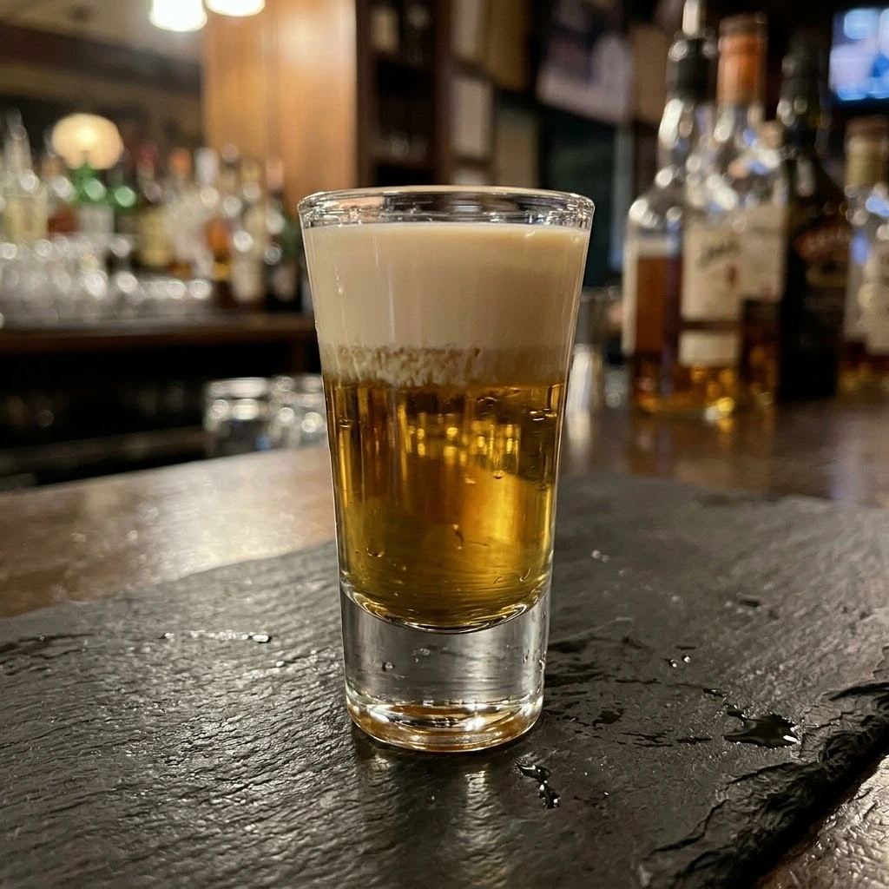
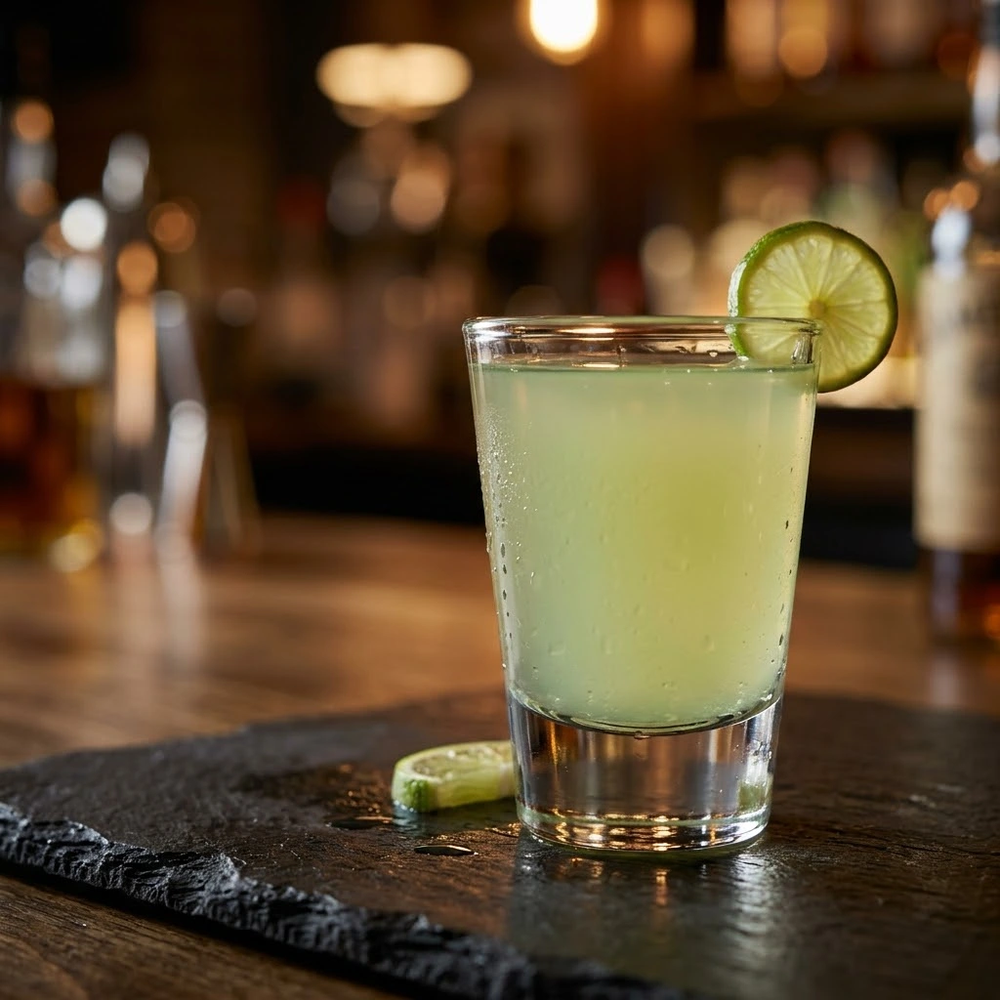
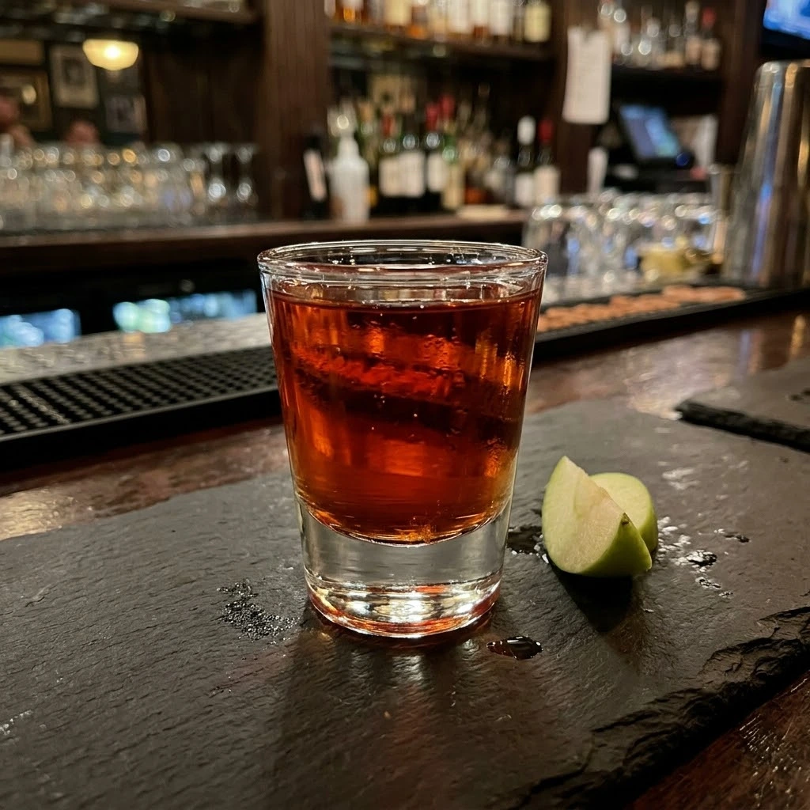
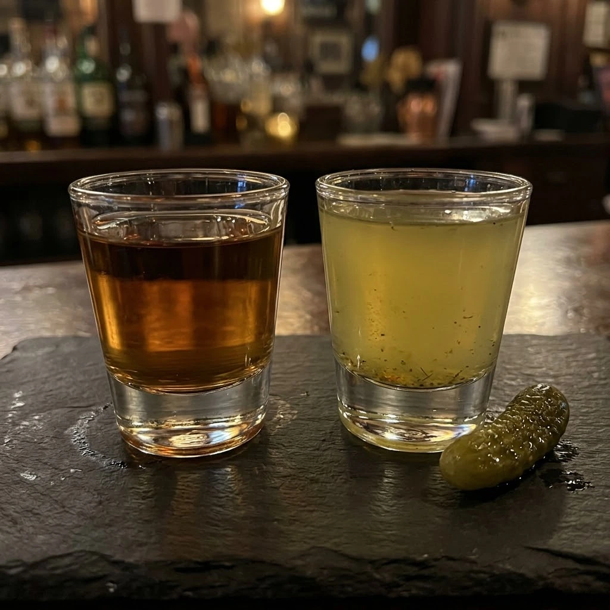
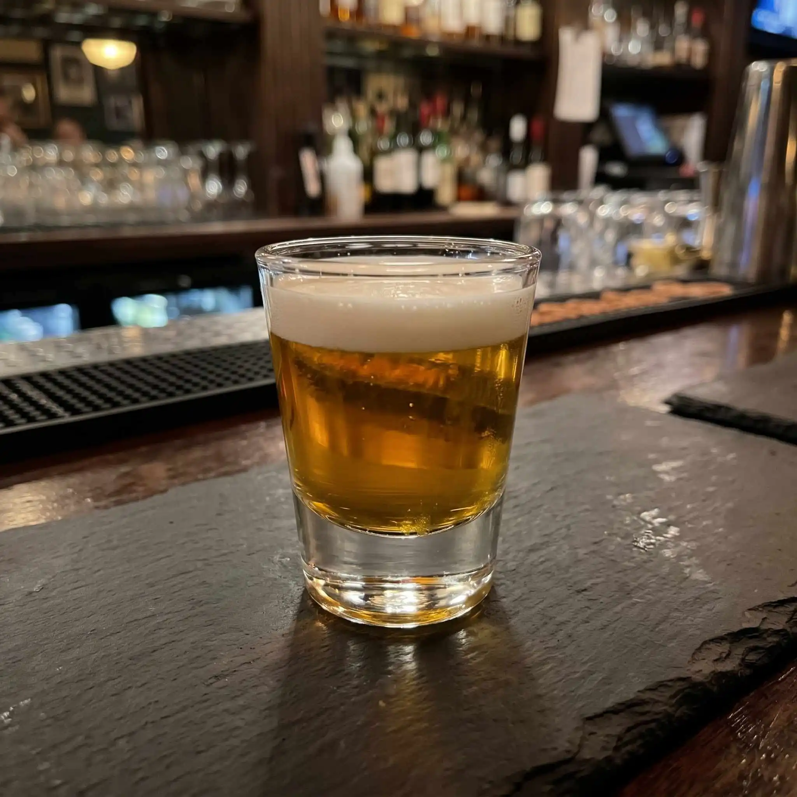

Buttery Nipple Shot
Butterscotch schnapps under a float of Irish cream. Tastes like a caramel candy.

Butterscotch schnapps under a float of Irish cream. Tastes like a caramel candy.

Stir 1 tsp butterscotch sauce into 1 oz cold milk and top with a little cream.
Pour it, then start a room. Drinking is optional in every game.

Green Tea ShotNo tea in it. Whiskey, peach and sour mix that happen to come out pale green.
Washington Apple ShotCrisp apple and cranberry with a little whisky warmth.
PicklebackA shot of whiskey followed by a shot of pickle brine. The brine takes the burn away.
Mini Beer ShotA golden vanilla liqueur with a cream head, served so it looks like a tiny beer.